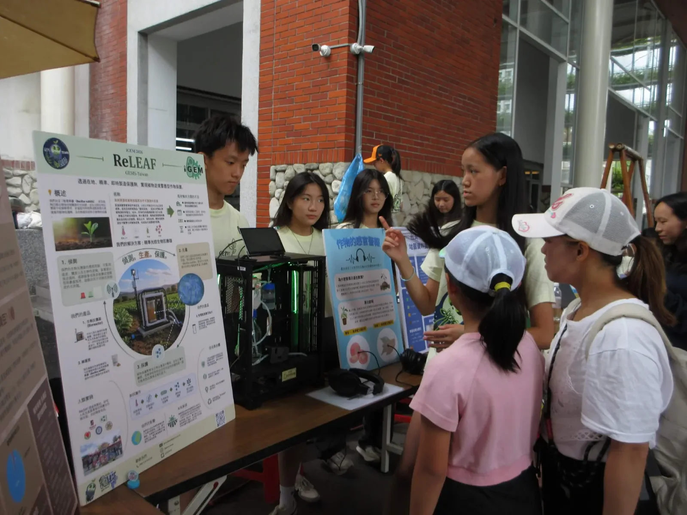

From data to map
We designed a physical map using styrofoam, colored paper, and LED lights to represent differences in crop yield and plant stress across different areas. The colors of the map represent crop yield, while the LED lights represent the severity of plant stress. Through this combination, viewers can visually compare areas with different agricultural conditions.
For our sound component, instead of just showing data, we wanted participants to actually hear what sounds are made by plants under stress. Plants respond to environmental stress in ways that are often invisible to humans. Consequently, many do not realize that plants can actually feel the impact of stress. We therefore allowed participants to use headphones to listen to recordings of the sounds produced by tomato and tobacco plants experiencing drought stress. This gave participants an opportunity to experience plant stress through hearing rather than simply reading about it.
